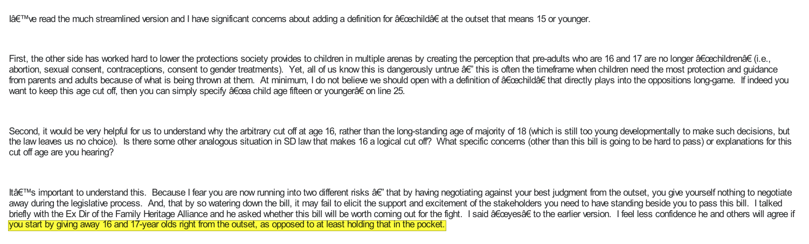
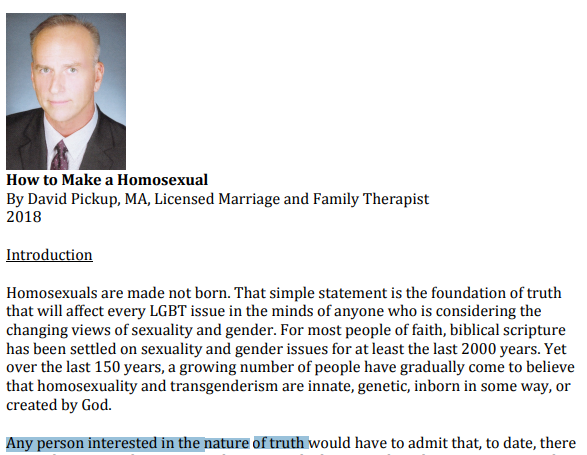

2,600 Pages Of Hate, a meta-Analysis
Content Warning for discussing transphobic behavior
I was supposed to write about Social Media, but instead plans have changed.
For the full list of the email addresses in the 2,600 Page Of Hate, Click Here!
Mirror
Recently, Maia Crimew got permission to post a 2,600 page PDF file containing conversations between 193 individuals in order to orchestrate a false moral panic around transgender people. The people in this email conversation include detransitioned individuals (who detransitioned because of conversion therapy), plastic surgeons,
psychiatrists, psychologists, and family therapists all of questionable degree of competence, government officials, Family Law Practitioners, Federal Court Lawyers, Religious Officials, College Professors, A Member of the UK's Department of Sociology, and transphobic hate groups all with the set goal of creating a false mass panic around transgender individuals.
There are a lot of powerful people, and it goes all the way to the top. The entire anti-trans movement was largely coordinated to be a slippery slope, with direct intent to intensify the restrictions on age and types of medication. These are truly mentally sick individuals, most of them shouldn't have any sort of relevancy with their reactionary hateful mindsets.

These are truly morally vacant individuals, most of them shouldn't have any sort of relevancy with their reactionary hateful mindsets, especially in such careers like therapy where being a remorseful, caring individual should simply be part of the job. But nope, these sick fuckers instead use places intended for the loving to enact their hateful ideologies onto the unknowing.

A Wise man once told me, "If the jews didn't exist, The Nazis would've just picked another minority group to be their scapegoat. They would make their own Jews."
{kind=link}